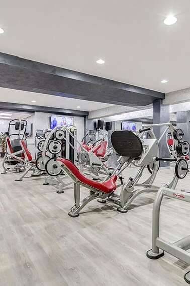
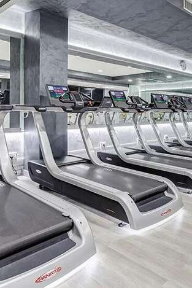
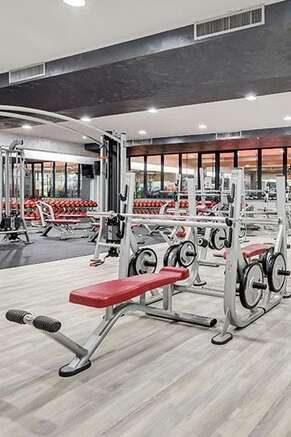

Le nostre attrezzature
Presso Bora Bora Fitness Club troverai tutte le attrezzature che il tuo
allenamento da campione necessita!
Le nostre macchine
Lat Machine
La Lat Machine è una macchina fitness isotonica
concepita per lo sviluppo muscolare della schiena e, più precisamente, del gran dorsale. Viene
considerata una delle macchine essenziali per l'allenamento di tale gruppo muscolare. La
funzione principale di questa macchina è quella di facilitare il movimento di trazione
vertiacale dall'alto verso il basso grazie alla possibilità di regolazione del carico e alla
modulazione dell'angolo di lavoro della spalla, che sono due caratteristiche difficilmente
replicabili nelle trazioni a corpo libero.
Chest Press
La Chest Press è una macchina fitness isotonica
che simula una panca piana con bilanciere. Viene utilizzata per l'allenamento del gran pettorale
ma coinvolge come muscoli ausiliari il tricipite e la porzione anteriore del deltoide. Questa
macchina viene principalmente utilizzata dai neofiti prima di apporcciare la Panca Piana.
Leg Extension

La Leg Extension è una macchina fitness isotonica
concepita per lo sviluppo muscolare del quadricipite femorale e risulta come l'unico esercizio
capace di isolare completamente quest'ultimo dal resto dei muscoli della coscia.
Leg Press

La Leg Press è una macchina fitness isotonica
concepita per lo sviluppo dei quadricipiti, dei muscoli ischiocrurali e del gran gluteo. Viene
considerato come l'esercizio principale per l'allenamento delle gambe.
Abductor Machine
La Abductor Machine è una macchina fitness
isotonica concepita per lo sviluppo dei muscoli dell'esterno coscia.
Adductor Machine

La Adductor Machine è una macchina fitness
isotonica concepita per lo sviluppo dei muscoli dell'interno coscia.
Tapis Roulant

Il Tapis Roulant è una macchina fitness che viene
utilizzata per esercizi cardio: camminata e corsa. Permette di regolare la velocità e
l'inclinazione del rullo.
Cyclette
La Cyclette è una macchina fitness per esercizi
cardio che, da ferma, consente di simulare una bicicletta. Non è dotata di ruote e ha la
possibilità di regolare la resistenza della pedalata.
I nostri attrezzi
Manubri

La nostra palestra è dotata di molte coppie di manubri identici, ognuna di peso diverso. Possono
essere utlizzati in esercizi che richiedono l'uso di una coppia di manubri ma anche in esercizi
a mano singola, usandone uno solo.
Kettlebell
La nostra palestra è dotata di kettleball di diverso peso. L'allenamento
con le kettlebell si basa sul miglioramento della capacità cardiovascolare, forza resistente,
flessibilità, elasticità, reattività neuromuscolare, potenza esplosiva e generale.
Palla medica
La nostra palestra è dotata di palle mediche di diverso peso. Serve a svolgere esercizi mirati a
potenziare la muscolatura, la resistenza, la forza e la velocità. Viene anche utilizzata in
fisioterapia e per la riabilitazione.
Panca per addominali

Panca che viene utilizzata come attrezzo di supporto durante gli esercizi per l'allenamento
dell'addome.
Panca piana

La panca piana viene considerata il miglior esercizio per allenare i pettorali. La nostra
palestra offre un'ampia gamma di pesi da aggiungere al bilanciere per svolgere l'esercizio con
il carico desiderato.
Sacco da Boxe
La nostra palestra è dotata di diversi sacchi da boxe. L'allenamento con
il sacco è uno dei più completi per dimagrire e mantenersi in forma, in quanto ti porta ad
un'attività di tipo full body.